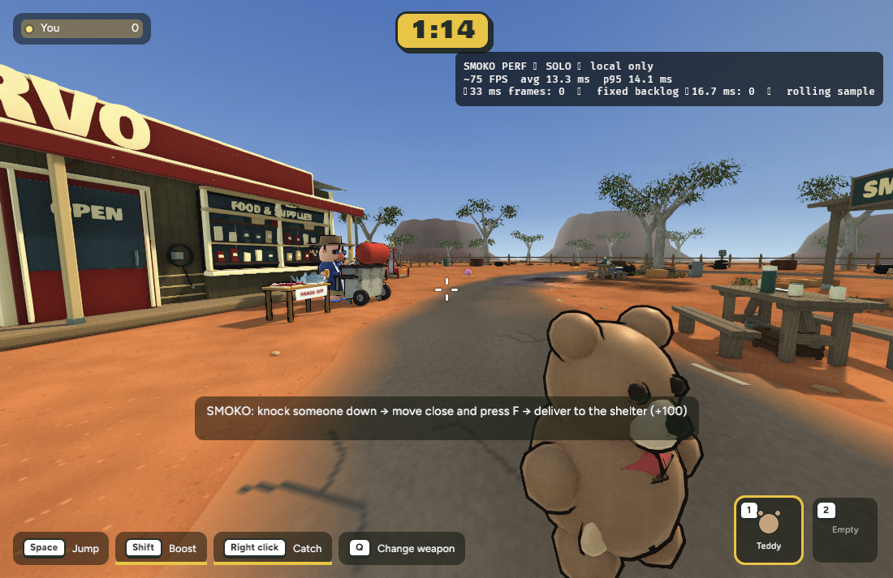
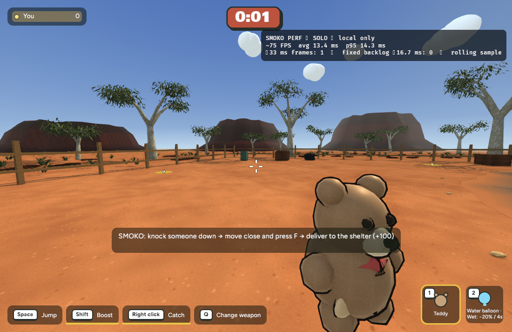
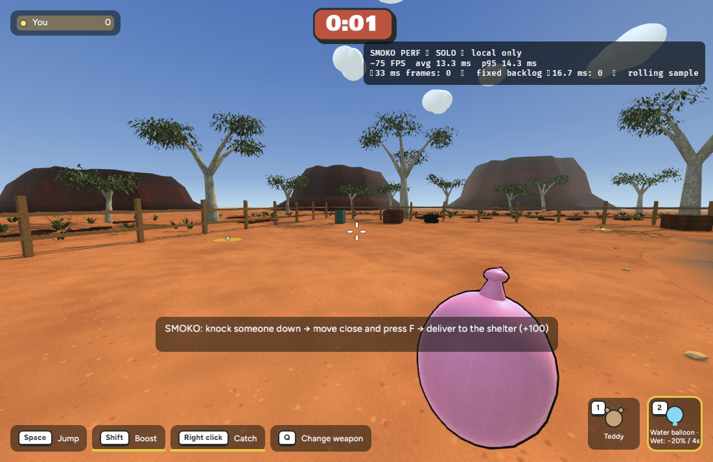

Actual Chrome gameplay. A teddy goes into the first slot. Picking up a balloon fills reserve. Q selects the balloon.



Full hands leave ground pickups in place. A successful catch with full hands drops the arriving item harmlessly at your feet and awards normal catch credit once.